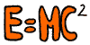

Críticas cristianas a la ciencia
El creacionismo antievolucionista no es la única reacción posible de los fundamentalistas cristianos contra la ciencia. Hay muchas más formas en que los conocimientos científicos podrían armonizarse con la moral bíblica –para que siga siendo lícito lapidar a los homosexuales, por ejemplo–. Tras profundas investigaciones en física, matemática y biología, sugerimos los siguientes ejemplos:
Críticas a la teoría gravitatoria
¿Sabía usted que la teoría gravitatoria es la única que posibilita que la gente se tire de los edificios y muera? ¡Exactamente, posibilita el suicidio! Entonces, ¿debemos los cristianos sinceros de corazón permitir que una barbaridad inmoral como esa sea aceptada y enseñada a nuestros hijos en clase? ¿Sabía usted que si se aboliera, podríamos volar como los arcángeles? ¿Sabía que esa ley niega lo que sucedió durante el glorioso día en que Josué detuvo el Sol y la Luna (Josué 10:12-13)? ¿Cómo puede ser correcta si niega lo que dice la Biblia?
Existen teorías cristianas alternativas, en las que la masa es una función hiperbólica que depende de la fe; así, usted podría volar y ser salvo si creyese en Cristo, a diferencia de los malvados y ciegos científicos ateos que se oponen a aceptar lo evidente: ¿Cómo negar que Cristo ascendió al cielo? ¿O que caminó sobre las aguas? Pero no, ellos que tienen el demonio por dentro van a seguir aferrados a sus dogmas vanos, que pasarán con el mundo; nosotros volaremos felices por toda la eternidad, mientras ellos se queman en el infierno. Amén.
Críticas a la teoría cuántica
¿Sabía usted que la mecánica cuántica posibilita que un electrón manifieste dos estados al mismo tiempo, hasta que un observador lo detecte? A estos se les llama estado excitado (disculpe el lenguaje sucio, querido lector) y estado no excitado. Como podemos ver, ésta es una forma de justificar el bisexualismo. Ahora, gracias a estos ateos endemoniados, los bisexuales podrán argumentar que los electrones se comportan así y que por ende, hasta que los vea un hombre o una mujer, ¡podrán ser ambiguos al respecto!
Es una vergüenza, para nosotros los cristianos verdaderos, que en un país cristiano como éste se enseñe en las universidades una teoría tan ignominiosa y moralmente ambigua, que enseña que Dios Jehová el Todopoderoso, aquel que creó el Universo y hace temblar la tierra con sólo pensarlo, y a quien debemos adorar hasta que se nos vuelvan polvo las rodillas, no puede (sí, leyó bien, no puede) conocer al mismo tiempo el momentum, velocidad y posición de uno de esos vergonzosos y ambiguos electrones. ¡Ja! Qué absurdos son esos ateos: piensan que para quien destruyó Sodoma y Gomorra hay algo imposible.
Debemos cambiar esta teoría por una Ley Cuántico-Cristiana que asuma que Dios puede conocer todo de esos electrones cuando lo desee, y que al mismo tiempo los defina y ponga en regla. No podemos permitir que esas ambigüedades anden creando maldad en nuestros corazones puros y llenos de fe. ¡Aleluya, Hermanos! Ha llegado la hora de la física cristiana, y por lo tanto, verdadera.
Críticas a la física nuclear
¿Sabía usted que la física nuclear posibilita la construcción de un horror como la bomba atómica? ¡Sí, en efecto! Los malvados, ateos y ciegos científicos han creado eso para destruirnos, tal como está profetizado en la Biblia. Pero esa teoría no es correcta; no se deje engañar, amigo lector. Lo que pasa es que el Demonio ha colaborado, y por medio de sus malas artes hizo una explosión gigantesca en el mismo momento de la “activación” de la bomba, engañando así a los ateos.
Nosotros proponemos una nueva Ley según la cual los átomos, por medio de la fe que todo lo puede, y los feones, las partículas que la transportan, se combinen de manera armoniosa para producir maná, panes y peces, y así los verdaderos cristianos ganaríamos adeptos eliminando el hambre sólo en aquellos que se conviertan. ¡Sí! Imagine la enorme cantidad de conversos que ganaría nuestro señor Jesús, alabado sea en su Gloria, y salvaríamos millones de almas que de otro modo irían a parar al infierno.
Todo lo que usted debe hacer es apoyar nuestra Ley Atómica Cristiana, y escribir a su representante en la Asamblea para que deroguen la teoría blasfema que causa la muerte a través del Demonio y de los ateos.
Críticas a la geometría
En la Biblia se afirma que pi vale 3 (1 Reyes 7:23), por lo que debemos enseñarlo así en los cursos de geometría para que sean correctos, ¿por qué cree usted hermano, que los edificios no soportan los terremotos? ¡Porque no los fabrican con el verdadero valor de pi!!!!!. Si los fabricaran con un valor de pi igual a tres, las construcciones ganarían solidez debido a la gracia divina que los protegería de todo mal basados en que el tres ¡es el numero de la Trinidad! Y por la gracia de las Tres Personas los edificios quedarían protegidos contra todo mal.
Además, el valor real de pi es un numero feo, difícil de recordar y ¡aproximado!, si amigo lector, es verdad, ellos no quieren que se sepa pero es verdad, el valor real que ellos consideran de pi es desconocido, ¿cómo pueden estos que nos hablan de ciencia decir que sus matemáticas son exactas si ni siquiera conocen el valor de este número? ¿Cómo pueden construir cosas sólidas si no tienen precisión al medir? En cambio Dios en su infinita sabiduría lo hizo exactamente igual a tres para que no hubieran aproximaciones y pudiera ser exacto y justo todo lo que es circular, amén hermanos que les hablo como me fue revelado y el hecho de que pi valga 3 es una hermosa prueba de que Dios existe y es trino, así lo nieguen los ciegos de mente cerrada que no ven más allá de sus narices y son incapaces de romper sus dogmas.
¡Alabado sea el señor por toda la eternidad!

Críticas a la genética
Esta “ciencia” postula que tenemos “genes” que no pueden cambiarse, lo que implica que ¡usted no puede cambiar ni renacer en Cristo! ¡Qué horroroso! Esto no puede ser, ¿verdad? Claro que no: Dios puede cambiarnos como quiera y hacer lo que quiera. Fíjense cómo hizo hablar a la burra de Balaam (Números 22:28-30) : eso no sería coherente con la genética moderna, pues Dios habría tenido que cambiar genéticamente a la burra, y como en la Biblia no se dice nada al respecto, entonces Dios Todopoderoso dejó a la burra tal como estaba, por lo que la genética se equivoca. Sus defensores sólo quieren llenar el mundo de clones que no van a tener alma, quieren llenar el mundo de miles de Hitler y de rubios ateos.
Son sólo intentos de los ateos de emular a Dios, y está escrito que los hombres que tratan de alcanzar a Dios serán castigados por Él, como sucedió a los de la torre de Babel. Adopte la Ley del Cambio Cristiano, que postula la herencia por medio de la mezcla de sangre (¿cómo olvidar las ovejas rayadas? Génesis 30:37-39) y el cambio de ésta por medio de la Fe y la intervención divina. ¡Aleluya, Hermanos! Ha llegado la hora de la Ciencia de Dios. Regocijémonos, porque el fin está cerca y ya no hará falta estudiarla.
Volver a la sección Humor
Comentarios
Comments powered by Disqus